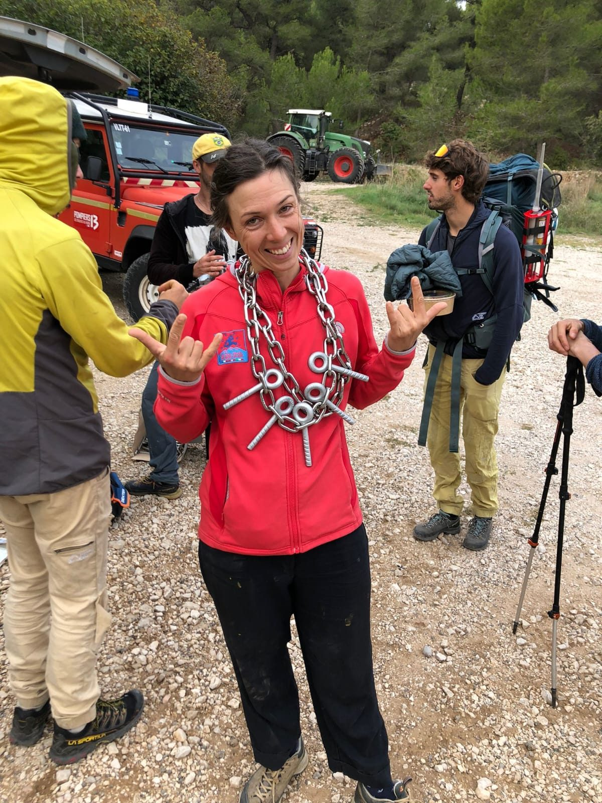
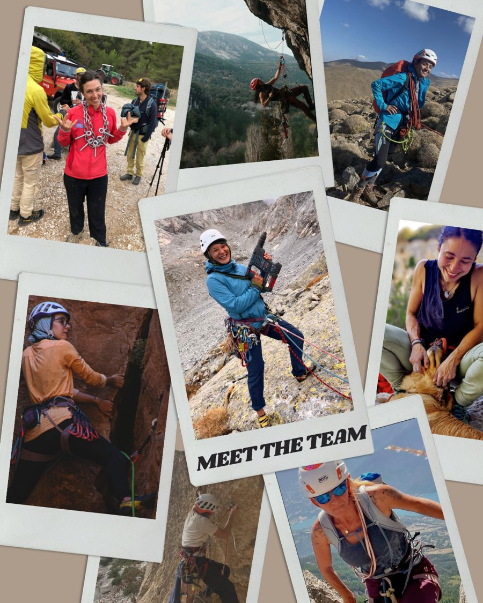
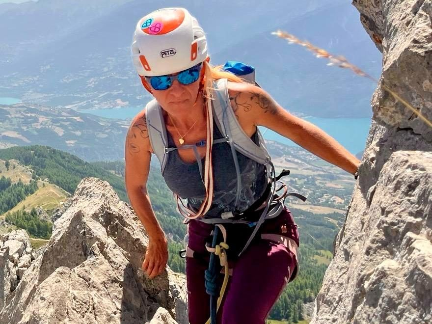
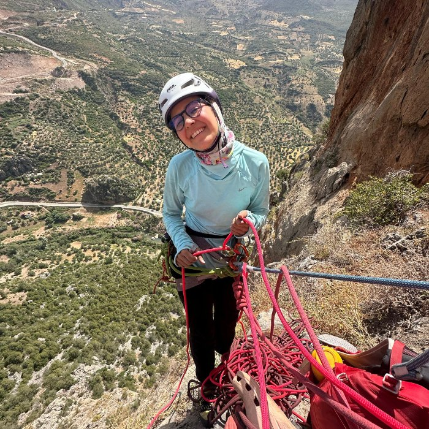
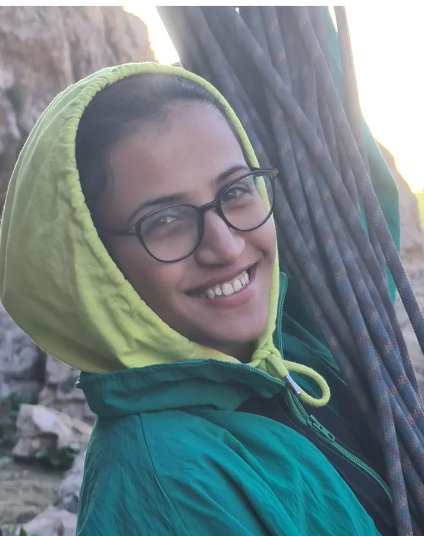
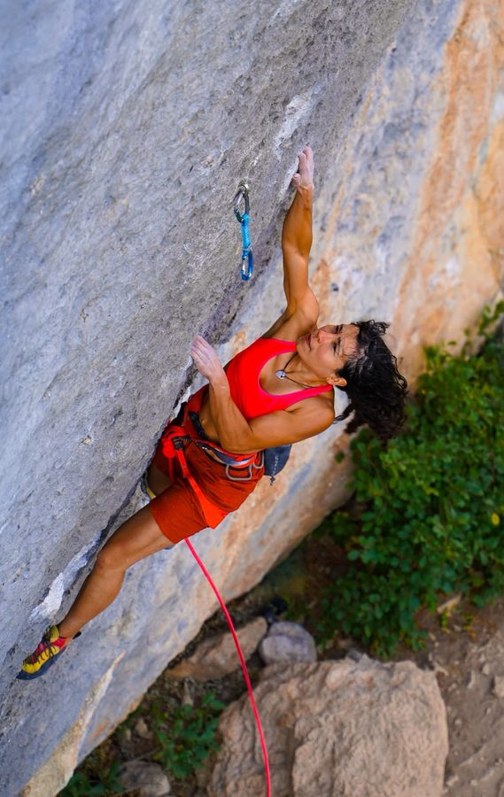
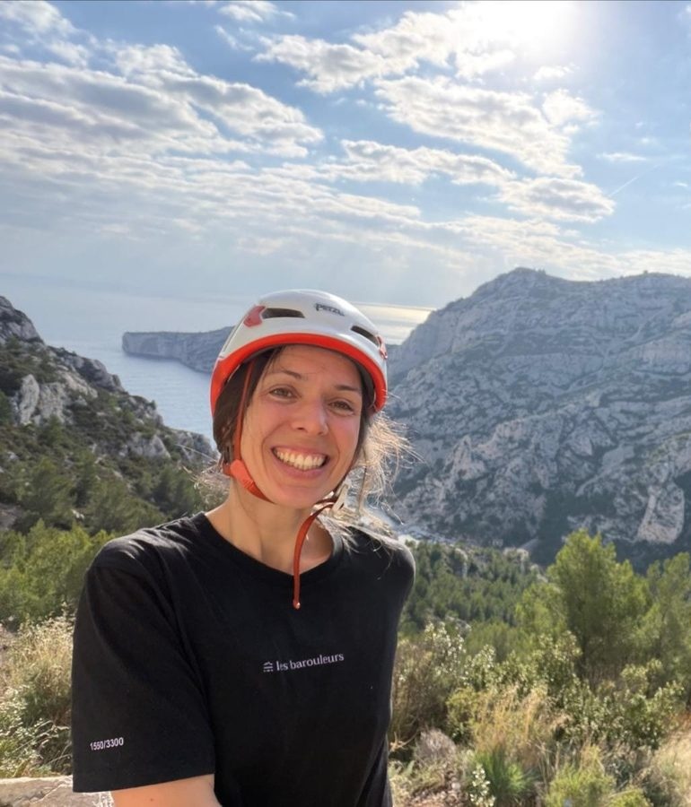
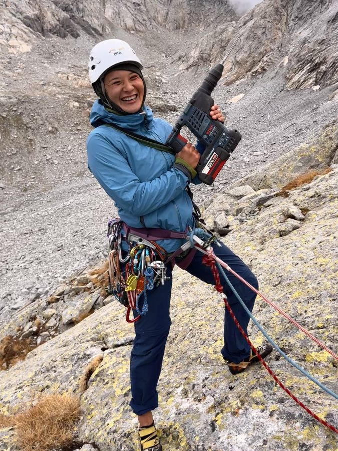
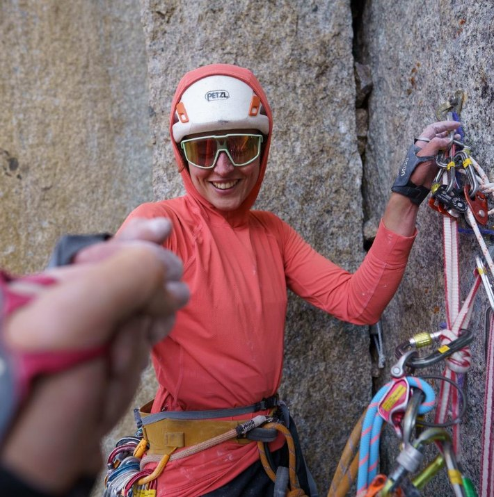
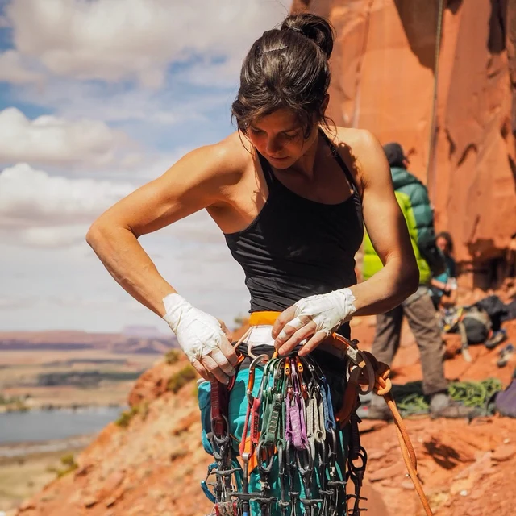

Rebolting Hearts is run by a small team of climbers, route-setters, and organisers based across Europe and Morocco.


I’m Marilyne, 50 years old. I was born and grew up in the heart of the Ubaye Valley, in the French Alps. Mountains have always been part of my life: I have been skiing, hiking and mountaineering for as long as I can remember. I started climbing 15 years ago, and for the past 5 years I have also been bolting and rebolting climbing routes. I am also a member of Greenspits, a renowned community of experienced and committed climbing route setters.
I originally trained as an engineer, and I hold federal qualifications in outdoor climbing and a professional qualification as an indoor climbing instructor. Throughout my professional career, I have worked to ensure that women’s skills, experiences and specific characteristics are better recognised and valued.
Today, I am involved in projects focusing on women’s leadership and governance in sport, and I am proud to be part of the “Club des 300”, a network of women leaders in sport supported by the French National Olympic and Sports Committee. I also work on projects addressing teenage girls’ disengagement from sport within the South regional climbing federation (FFME).
Supporting Rebolting Hearts feels completely aligned with my values and with the meaning I want to give to my commitment to the climbing and mountain communities. I hope to contribute through my experience as an instructor and route setter, while also helping to build bridges between the different mountain and climbing communities I have the chance to be part of.
I have always loved travelling, meeting people and discovering new ways of sharing our passion for the mountains. For me, Alpine Hearts is a natural and exciting way to connect, learn from each other and create something meaningful together.
❤️ Come and join us — let’s build a more connected, inclusive and inspiring climbing community together!

My name is Kaotar, I am 31 years old and I am Moroccan, from Casablanca.
I’ve been climbing since 2021. I’ve always loved the outdoors (and climbing a little more), and what I like most about climbing is everything it teaches me: this feeling of humility and all these little life lessons.
Being part of this project means a lot to me. Sharing this sport with others, this passion, is something that is close to my heart, and even more so when it comes to sharing it with women like me. Finding each other, climbing together, encouraging each other and evolving together, it’s so empowering. 🤍
I look forward to seeing you at this magnificent event, to share beautiful moments and to contribute in my own way to the growth of the female climbing community in Morocco.

I’m Hind, 33 years old, from Casablanca, Morocco. I have been climbing since 2020, and have always been an outdoor lover.
I have always felt that I get so much from nature and from climbing, and with this project I feel like I am gonna give a little bit back to the sport that I have always loved, and also to the community that I see growing every day.
Please come and join us at this beautiful event to support the women’s climbing community in Morocco, and to discover and connect. Much love.

I’m Alma Esteban. I’ve been climbing for almost 20 years, and two of the things I love most in life are climbing and teaching, including my work as a Warrior’s Way trainer, where I help climbers with mental training.
Being part of a supportive community means the world to me, and I love giving back however I can. I’ve organised community events and taught rebolting workshops in the past, and for this project, I’ll be guiding our participants through the hands-on process of replacing route hardware.
When I first started climbing, I quickly realised how daunting it can feel to step into a well-established space when you’re in the minority. Those subtle, invisible barriers can really make you feel like giving up. Having safe, supportive spaces to learn together with other women has been such an uplifting experience for me.
I’ll never forget teaching a women’s rebolting workshop and watching a participant cut through an old bolt with a disk cutter. Sparks flying everywhere ✨, biceps flexed 💪, completely beaming with confidence 🦹🏻♀️. It was such an empowering moment, and it completely changed my perspective ❤️🔥. I’m so excited to help create more moments like that for our community.
If this speaks to you, please come join us! We’d love to have you on board, no matter your background or skill set. There’s a place for everyone here! 🙋🏽♀️

Hi ladies, I’m Caroline, 36. I started rock climbing 10 years ago, I’ve been teaching indoor climbing for 4 years, and now I’m just 2 weeks away from finishing my outdoor rock climbing degree! Passionate, smiling and with a lot of humour (not liked by everyone), I have a lot of energy to get involved in this event and others!
I’m planning the project for now and hoping I can share some tasks 😉
I would love more women to feel strong and legit enough to handle a perfo, glue some bolts and to feel free to learn and do whatever they feel like! Plus I hope to make this event as eco-friendly as we can: rebolting keeps some cliffs from becoming crags with heavy works and lots of people disturbing wildlife… and as I’m a bit of a utopian, I plan to come by boat and van with my beloved Cachou ❤️ 🐶
So come join us for the first camp in Morocco, to help us plan and organise the event, or just follow us so we feel supported!

Heya, my name is Cynthia-Lane (she/they) and I’m based in the Swiss Alps.
Last year I got involved in rebolting projects around an alpine hut and I loved it! I love being part of shaping climbing areas and I love to connect with other Flintas* for climbing. I feel so psyched to be part of Rebolting Hearts, I can feel the energy that we all want to put in to make this happen and to build strong connections.
Right now, I’m the person behind the Instagram account and would be happy to share this with someone who wants to support this project with their social media skills. So, if this community that we are building speaks to you, then slide into our DMs and get involved!
We are happy to have you here!

I’m Mathilde, a 31-year-old French aspirant mountain guide. I’ve been climbing for 6 years, and in winter I’m also a mixed and ice climber. I love going on adventures in the mountains and opening routes.
As a woman it is not easy to find our place in the climbing and mountaineering community, so taking care of our crags by rebolting routes is a great way to take more leadership positions. We are more than qualified to do this, but as long as this field is dominated by men, women will feel excluded. Our goal is to teach and inspire others to join this adventure.
I’m really happy to be able to help and take part in this amazing project. Come and join us! 🙌🏽
“I feel so psyched to be part of Rebolting Hearts, I can feel the energy that we all want to put in to make this happen and to build strong connections.”— Cynthia-Lane
“With this project I feel like I am gonna give a little bit back to the sport that I have always loved, and also to the community that I see growing everyday.”— Hind
“As a woman it is not easy to find our place in the climbing and mountaineering community, so taking care of our crags by rebolting routes is a great way to take more leadership positions.”— Mathilde
“I would love more women to feel strong and legit enough to handle a perfo, glue some bolts and to feel free to learn and do whatever they feel like! Plus I hope to make this as much eco-friendly as we can!”— Caroline
Our ambassadors lend their voice and experience to make women's rebolting and bolting work more visible.

Swiss professional climber known for hard multi-pitch routes around the world. Nina is the first ambassador of Rebolting Hearts.
We're always looking for women climbers to join workshops, help organise events, or support behind the scenes.